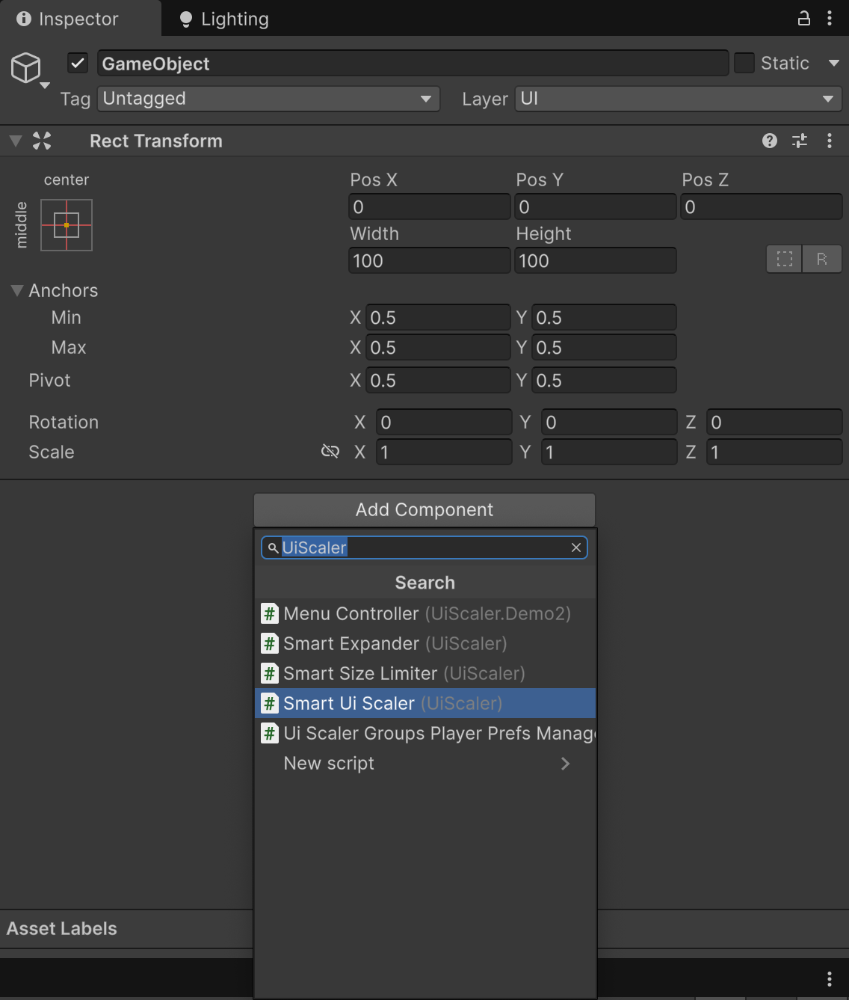
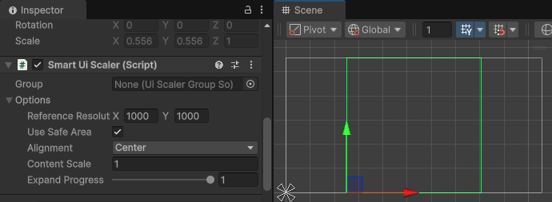
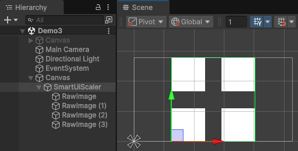
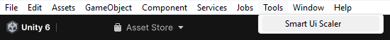
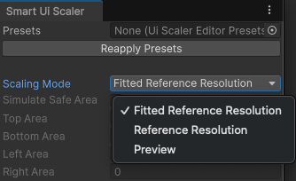
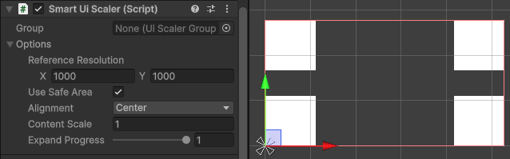

Getting started
This guide will help you to setup initial SmartUiScaler.
Create a new GameObject inside your Canvas;
Add the SmartUiScaler component to this GameObject. The RectTransform of this GameObject will be driven by SmartUiScaler and will automatically resize;

At first the SmartUiScaler will work in "Fitted Reference Resolution" mode. You can see in Scene View that Canvas is represented with gray border and SmartUiScaler has green border. This mode is recomended for editing Ui layouts inside SmartUiScaler and to place objects without overlapping;

Lets add Ui objects into our SmartUiScaler. As an example here is 4 added RawImages anchored to the corners of the SmartUiScaler;

Now to test the SmartUiScaler with our UI layout we can open "Smart Ui Scaler" window under "Tools" > "Smart Ui Scaler";

This tool helps to test scaling without entering into Play Mode. Here we can change the current scaling mode into "Preview". This mode works exactly as it would in Play Mode;

We can now see that out SmartUiScaler takes up full area of the Canvas. Now you can test all the SmartUiScaler component Options to see them in effect;

Note
In "Preview" mode SmartUiScalers border changes into Red color. This indicates that it is not advised to change the inner UI layout in this mode.
- Change back the "Scaling Mode" in "Smart Ui Scaler" window to "Fitted Reference Resolution". SmartUiScaler will resize to reference resolution and you can continue to work on your UI layout. At this point you can remove the CanvasScaler component from Canvas object as it not needed.
Note
As an alternative, cloasing the "Smart Ui Scaler" window will also rest the "Scaling Mode" to "Fitted Reference Resolution".
These steps are the basics of creating and testing your UI layout with an initial setup that should cover most of the use cases.